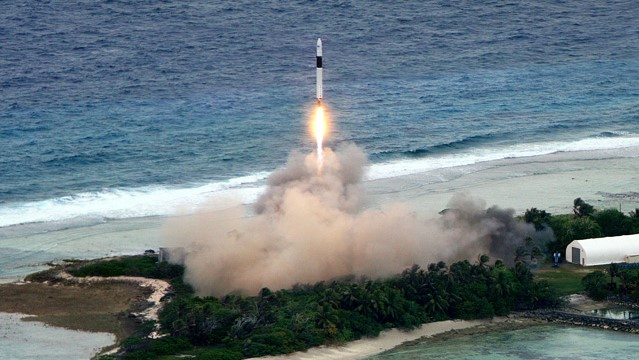

Falcon 1
Primo razzo a raggiungere con successo l'orbita terrestre bassa finanziato completamente da privati
È un razzo orbitale a due stadi che usa come carburante ossigeno liquido e RP-1 per entrambi gli stadi. Il primo è spinto da un unico motore di classe Merlin ed il secondo da un unico razzo di classe Kestrel.
Il veicolo è stato lanciato per cinque volte, riuscendo a raggiungere l'orbita durante il quarto tentativo nel settembre 2008, con della zavorra al posto del carico utile.
Il 14 luglio 2009 il Falcon 1 eseguì l'ultimo volo portando in orbita il satellite malese RazakSAT, durante il primo lancio commerciale di SpaceX. Dopo il quinto lancio è stato sostituito dal Falcon 9.
